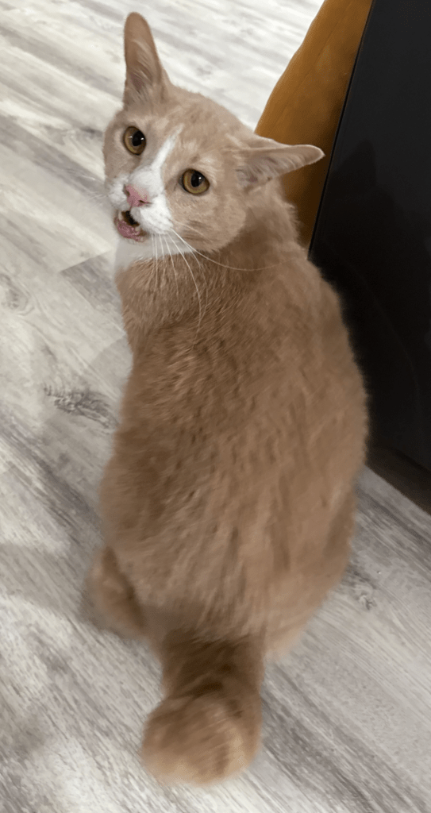
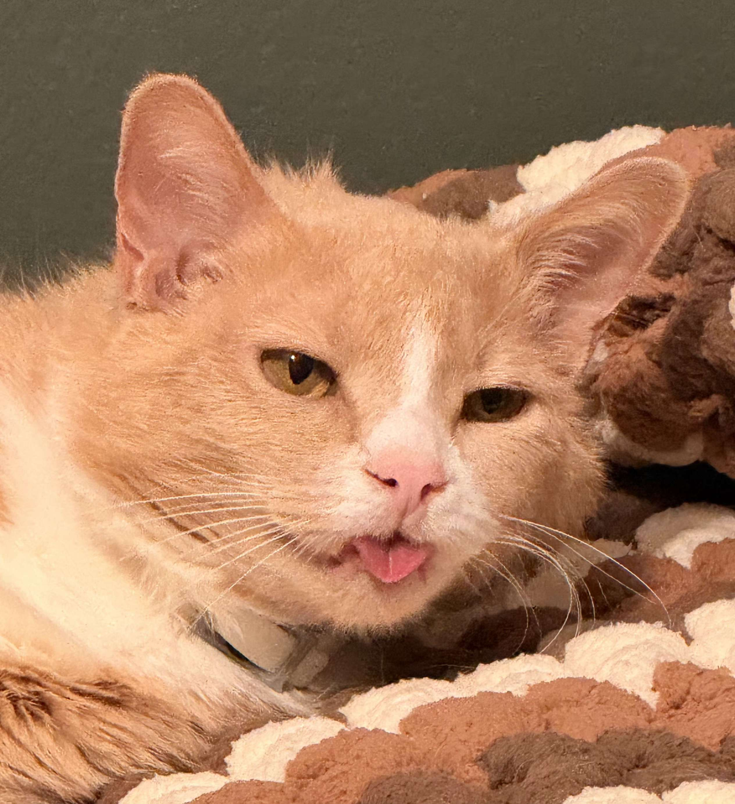
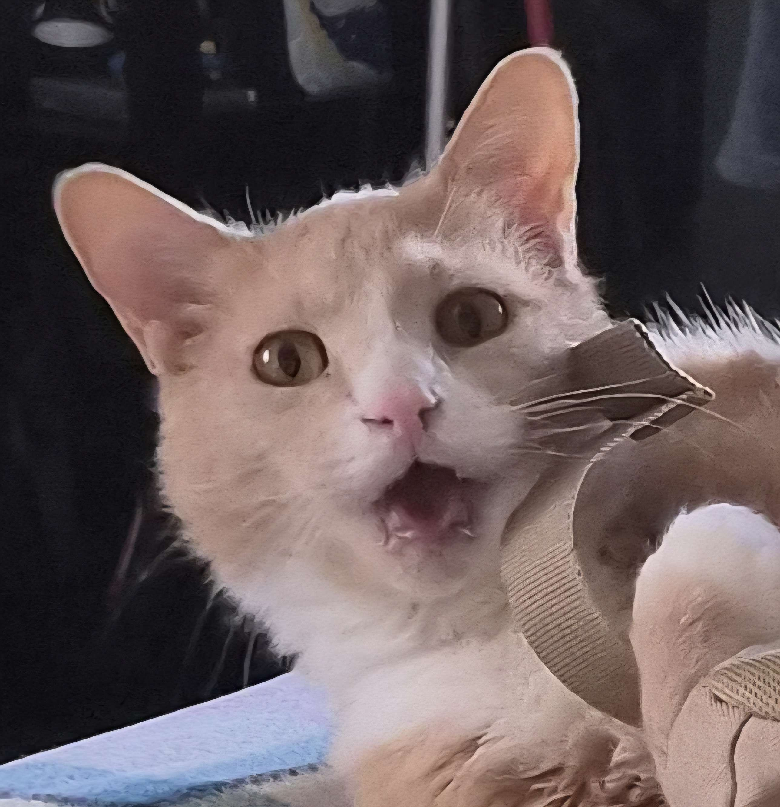
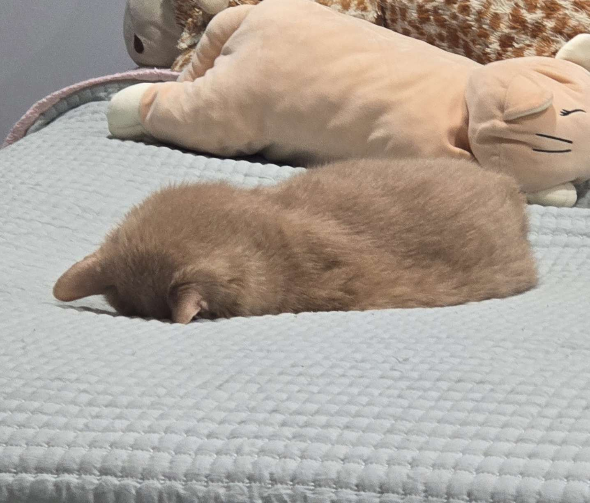
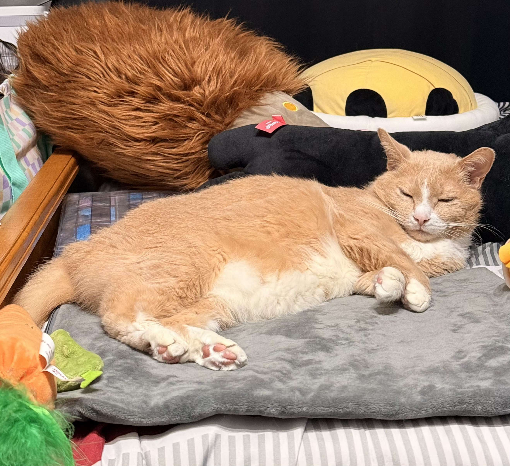
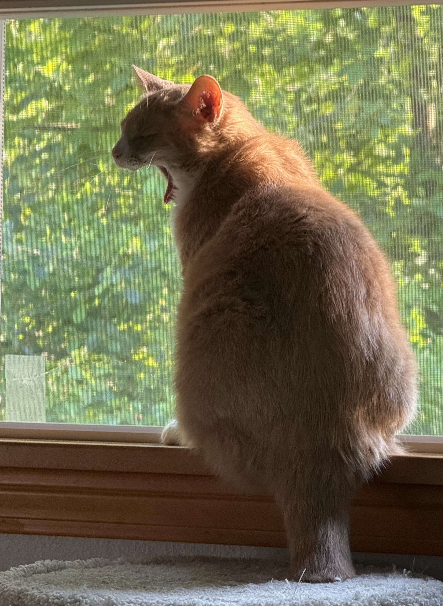

Howdy! I’m Kyle Lasky, a Sophomore majoring in DIGIT, (digital media, art, and information), at Pennsylvania State University, the Erie campus.
I am an aspiring UX/UI designer and website developer. I love to use my creativity to enhance my projects.
Throughout my life I have been very passionate about learning the, “why”, of everything. My favorite show growing up (and to this day) is, “How It’s Made”.
In high school I learned about website development and dipped my toes into the world of user experience. Ever since I knew it was what I wanted to do.
Making sites user friendly, functional, and beautiful is what I strive to do with every project I take on. I’m always learning to improve my abilities.
Bean is my surpurrvisor! She is a rescued kitty with a scruffy orange coat and a sturdy half-tail.
She helps me design all of my projects and makes sure to tell me exactly what she likes and dislikes.





